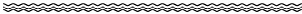
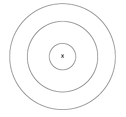

Sosyal destek

İnsanoğlunun en büyük sıkıntılarından birini sosyal ilişkiler oluşturur. İnsan olarak en çok ihtiyaç duyduğumuz olgulardan biri olmasına rağmen, insan ilişkisi bizde en yoğun strese yol açan alandır. Nitekim yapılan araştırmalar, bizi fiziksel ve psikolojik olarak hastalandıran stres faktörleri arasında psikososyal stresi, yani insanlarla yaşadığımız stresi ilk sırada gösteriyor. Ama bu, insanlardan uzaklaşmak ve yalnız bir hayat biçimi tercih etmek gerektiği anlamına gelmiyor. Çünkü bu tarz bir yaşam biçimi psikososyal stresle karşılaştırıldığında çok daha agresif ve tehlikelidir. Bu nedenle bütün stresine rağmen bir kişinin 40 kişilik bir koğuşta cezasını çekmesi, tecrit edilmesinden daha iyidir.
Bir insanın dış dünyadaki insanlarla girdiği ilişkilerin tümü onun sosyal ağını teşkil eder. Kişinin birkaç iyi, yakın ve güvene dayalı ilişkisinin olması psikolojik ve fiziksel sağlık açısından son derece önemlidir. Nitekim araştırmalar aile, arkadaş çevresi ve iş hayatında yolunda giden ilişkiler sürdüren insanların çok daha az hastalandıklarını ve daha uzun yaşadıklarını gösteriyor.
Sosyal ağlarla ilgili yapılan araştırmalar, kadınlar ve erkekler arasında birçok konuda olduğu gibi bu konuda da farklılıklar olduğunu gösteriyor. Kadınlara kıyasla erkekler yakın ve güvene dayalı ilişkiler kurma konusunda sorunlar yaşıyor ve çok nadiren özel konuları konuşabildikleri ve destek alabilecekleri yakın bir arkadaş grubuna dahil olabiliyorlar. Bu anlamda aile ve çocuk sahibi olmak erkekler için çok daha fazla koruyucu bir özellik taşıyor. Bu yüzden de evli erkekler bekârlara göre hem daha uzun, hem de daha sağlıklı yaşıyor.
Kadınlar erkeklere kıyasla çok daha rahat duygusal destek ve somut yardım aldıkları sosyal ağlar kurabiliyorlar. Duygusal ve somut destek vermek konusunda da sıkıntı yaşamıyorlar. Erkekler bu konuda daha çok alıcı durumdayken, kadınlar hem alıcı hem de verici oluyorlar. İyi giden bir evlilik ve aile hayatı kadınlarda da daha uzun bir yaşam ve sağlığa yol açarken, bekâr olmak bir risk taşımıyor. Çünkü kadınlar bekâr olsalar da destekleyici sosyal ağlara sahip oluyorlar.
Görüldüğü gibi insanın psikolojik ve fiziksel sağlık açısından yolunda giden sosyal ağlara olan ihtiyacı oldukça önemlidir. İnsanlar doğaları gereği düzenli bir şekilde karşılıklı anlayış, sevgi ve şefkat gördükleri ilişkiler yaşamak zorundalar. Dul kalan insanların yaşam sürelerinin kısalması, grup içinde çalışan insanların yalnız çalışanlara kıyasla daha az stres yaşamaları ve daha fazla üretmeleri, yalnız yaşayan insanlarda intihar riskinin daha yüksek olması gibi birçok gösterge de sosyal ağın öneminin altını çizmektedir.
Şimdi içinde bulunduğunuz sosyal ağ ve oradan aldığınız desteğin bilincine varmak ve ilişkilerinizi mümkün olan en iyi hale getirebilmek için aşağıdaki uygulamalardan faydalanabilirsiniz.
1. Uygulama
Sosyal ağ
Aşağıda üç tane daire görüyorsunuz. Kendiniz için en içteki daireye bir çarpı işareti koyun. O işaret sizi temsil etsin. Şimdi bu dairelerin yardımıyla kendi sosyal ağınızı görselleştirebilirsiniz.
Sosyal ağınızda bulunan insanları size olan yakınlıklarına göre dairelere oturtun. Böylelikle insanlarla yakınlığınızı ve uzaklığınızı görselleştirmiş olursunuz. Dilerseniz her daire için farklı renkler kullanabilirsiniz.
En içteki daireye size en yakın olan insanları yerleştirin. İkinci daireye sizin için önemli olan ama şu anda çok yakın olmayan insanları koyun. Bunlar; arkadaşlar, iş arkadaşları ya da aile fertleri olabilir. Üçüncü daireye ise sıkça görüştüğünüz insanları yerleştirin.
Yerleştirme işlemini bitirdikten sonra önünüzdeki resme dikkatlice bakın. Dağılım hakkında neler düşünüyorsunuz ve neler hissediyorsunuz?
Ve şimdi de bu resimde değişmesini istediğiniz şeylere karar verin. Kimlerin size daha yakın, hangilerinin ise daha uzak olmasını istiyorsunuz. Belki size şu anda yakın olan ama sizi sıkıntıya sokan birileri vardır ve siz onlara biraz mesafe koymak istiyorsunuzdur. Ya da size şu anda uzak olan ama daha yakın olmasını istediğiniz biri vardır. Hissettiklerinizi oklarla şimdiden belirleyebilirsiniz. Sonrasında da ilişkilerde arzu ettiğiniz değişimleri nasıl gerçekleştireceğiniz konusunda düşünebilirsiniz.
z
2. Uygulama
Sosyal destek
Bu alıştırmada yakın (aile, yakın arkadaşlar) ve uzak (tanıdıklar, iş arkadaşları, komşular) sosyal ağınızda bulunan insanlarla olan ilişkilerinizi değerlendirin. Adını yazdığınız kişiyle ilişkiniz sizi tatmin ediyorsa değerlendirme bölümüne ✔ işareti koyun. İlişkiyi daha da güçlendirmek istiyorsanız değerlendirme bölümüne x işareti koyun. İlişkiyi değerlendirdikten sonra o insanlarla herhangi bir şey yapmak isteyip istemediğinize karar verin. Eğer bir aktivite yapacaksanız, sonrasında alıştırmaya neler hissettiğinizi not edin.
Yakın çevre

KişiDeğerlendirme Aktivite
Aktivite Duygular
Duygular


Uzak çevre

Kişi Değerlendirme
Değerlendirme Aktivite
Aktivite Duygular
Duygular